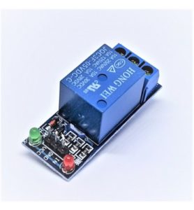
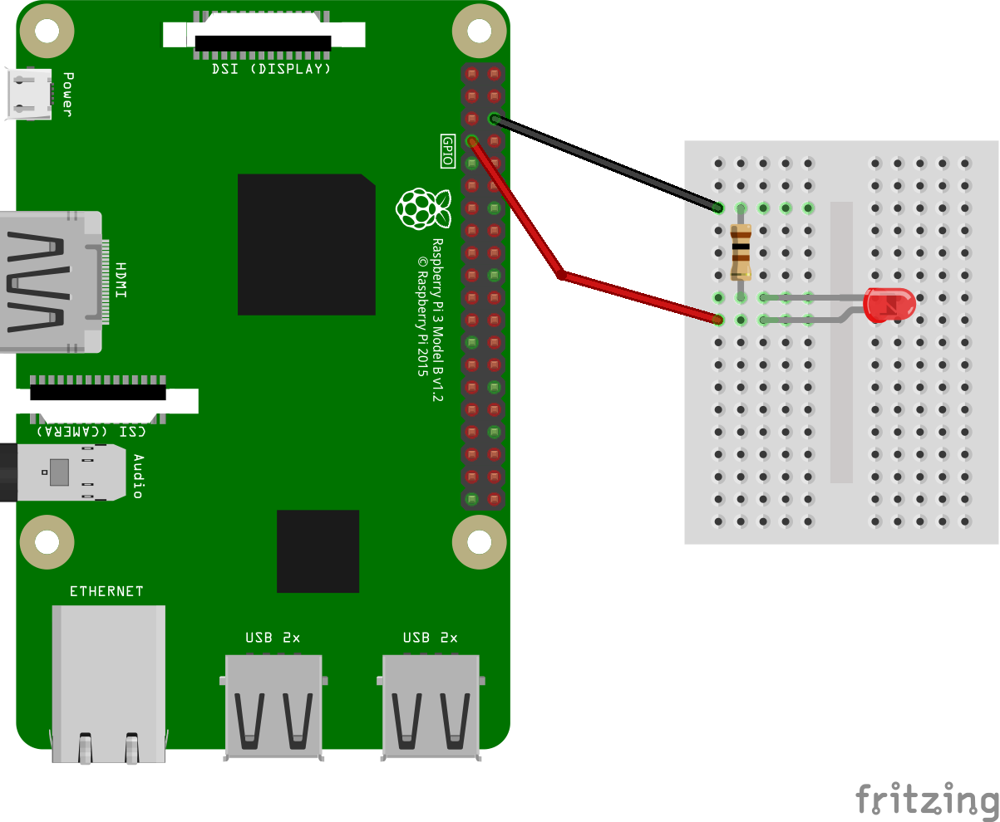
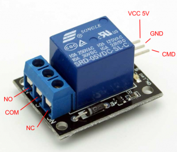
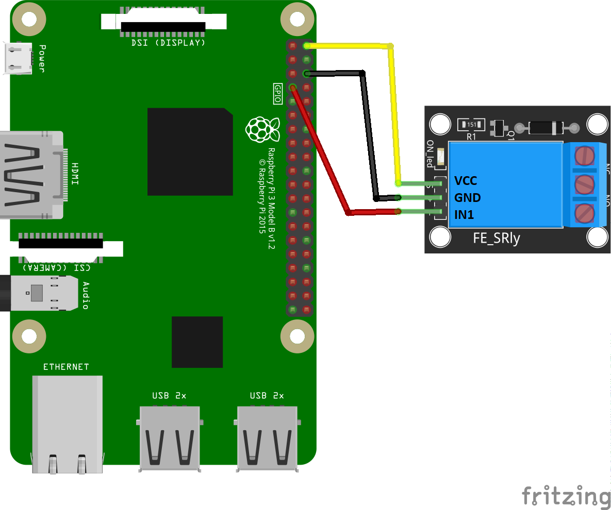
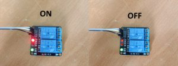
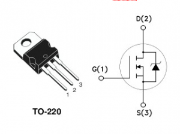
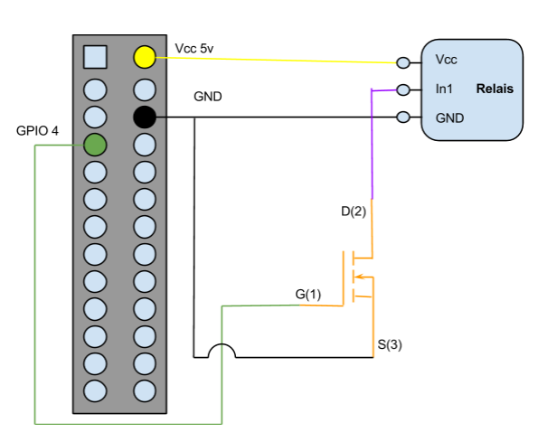
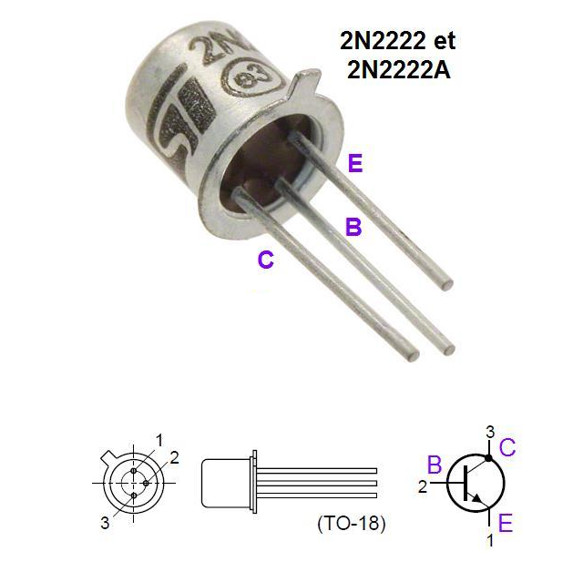

Cet article à pour but de faire interagir le Raspberry Pi avec
n’importe quel dispositif basse tension (230 v) de votre maison ou
appartement. Ceci vous permettant de faire un peu de domotique comme
allumer ou éteindre une ampoule, une prise de courant, un appareil
électrique ou encore contrôler un portail électrique.
Pour cela on va se servir d’un petit module appelé un relais. Vous en trouverez sur le net très facilement.

Pour contrôler le module nous allons le connecter à un port GPIO du RPI.
Attention, on ne peut bien sur pas se connecter sur n’importe quelle broche. Vous pouvez lire cette introduction écrite par François pour vous familiariser avec se qu’est un port GPIO.
Pour faire un recap, le connecteur GPIO est équipé de :
- d’entrées / sorties numériques (GPIOx) permettant de faire du tout ou rien ( entrée/sortie numérique 0 ou 1)
- Un port série (UART)
- Un bus I2C pour des transmission vers des composants électroniques utilisant ce protocole (I2C)
- Un bus SPI, qui est un bus série ressemblant au bus I2C mais beaucoup plus rapide (SPI).
- Une sortie + 5 Volts pour alimenter divers montages (maximum 500 mA suivant le type de RPI utilisé)
- Une sortie + 3.3 Volts avec un maximum de 50 mA.
Les broches sont à usage multiple :
- en entrée numérique tout ou rien, pour détecter un interrupteur par exemple
- en sortie numérique tout ou rien, pour activer un relais par exemple (justement ce qu’on va faire plus loin)
- en sortie numérique PWM, pour contrôler la puissance moyenne d’une led par exemple
- en protocole I2C, d’échanger avec une ou plusieurs puces
- en protocole SPI, idem
- en protocole UART, d’échanger avec une seule puce (ou un PC)
Premier test avec une LED
A l’aide d’un script Python, on va passer l’état de la broche GPIO 4 de 0 à 1. Ce qui aura pour effet de faire passer le courant dans la LED et l’éclairer. Le RPI sera protégé par une résistance de 100 Ohm (marron, noir marron, or). Le circuit est fermé par un raccordement à l’une des broches « GND» qui représente donc la masse.
C’est un peu le « hello world » des circuits électroniques pour Raspberry Pi. Vous le trouverez un peu partout sur le net. Je ne passe plus de temps à expliquer, l’objectif ici est de valider que notre script est capable de commuter un des ports GPIO.

Le script se base sur la librairie python RPI.GPIO. Il en existe d’autres comme gpiozero. Libre à vous de modifier le script pour utiliser la librairie de votre choix si vous etes à l’aise avec l’exercice.
On installe la librairie à l’aide du gestionnaire PIP:
sudo pip3 install RPi.GPIO
On ajoute notre script avec le contenu suivant:
import RPi.GPIO as gpio
import time
from signal import signal, SIGINT
from sys import exit
def handler(signal_received, frame):
# on gère un cleanup propre
print('')
print('SIGINT or CTRL-C detected. Exiting gracefully')
gpio.cleanup()
exit(0)
def main():
# on passe en mode BMC qui veut dire que nous allons utiliser directement
# le numero GPIO plutot que la position physique sur la carte
gpio.setmode(gpio.BCM)
# defini le port GPIO 4 comme etant une sortie output
gpio.setup(4, gpio.OUT)
# Mise a 1 pendant 2 secondes puis 0 pendant 2 seconde
while True:
print("on")
gpio.output(4, gpio.HIGH)
time.sleep(2)
print("off")
gpio.output(4, gpio.LOW)
time.sleep(2)
if __name__ == '__main__':
# On prévient Python d'utiliser la method handler quand un signal SIGINT est reçu
signal(SIGINT, handler)
main()
On lance le script:
python3 test_led.py
Lecteur vidéo
Utilisation du relais 5v
Maintenant on va simplement remplacer la LED (et la resistance) par le relais.
La carte relais est un commutateur électrique qui permet de commander un second circuit utilisant généralement une tension et un courant bien supérieur à ce que un dispositif électronique comme le Raspberry pourrait accepter. En gros, c’est un interrupteur qui se ferme quand on lui lui place un certain courant ou une certaine tension sur sa patte de commande. Dans notre cas c’est la tension de l’un des ports GPIO du Rpi (3.3V) qui déclenchera cet interrupteur. Voici une petite image pour bien identifier chaque élément.

Le relais se compose de deux parties.
- Une partie commande (à droite sur la photo) composée :
- VCC: broche d’alimentation de 5 v pour le relais lui même,
- GND: une masse
- IN1: broche de commande pour faire basculer l’état
- De l’autre coté, à gauche donc, on trouve la partie basse tension.
C’est cette dernière partie qui sera connectée à votre dispositif que
vous souhaitez piloter. Elle se compose:
- NC : signifie ‘NORMALLY CLOSED’. Cela veut dire que lorsque le relais n’a pas de signal d’entrée (0 sur la broche de commande), le circuit haute tension connecté sera actif. Si on câble comme cela il faut donc envoyer du courant à la partie commande pour faire basculer le relais.
- NO signifie ‘NORMALLY OPEN’. Cela veut dire qu’à contrario, une valeur de 5V appliqué au relais (1 sur la broche de commande) coupera le circuit haute tension et inversement.
- COM: Commun. Dans nôtre cas on va y brancher la masse du dispositif à contrôler.
Vous l’aurez compris. On ne va utiliser que deux des fiches sur les trois du relais suivant le mode de fonctionnement choisi (normalement ouvert ou fermé).
Donc le montage est simple:
- 5 v du Rpi -> Vcc 5V du relais
- Ground du Rpi -> GND du relais
- L’un des port GPIO du Rpi -> La patte de commande du relais (numéroté IN1, IN2, etc.. généralement)

Relancez le script, si le relais commute correctement, c’est tout bon!
En revanche, il est possible que le relais, comme c’est mon cas, passe bien en position fermé, mais ne revienne jamais en position ouverte.

On peut voir sur la photo de droite que même en position 0, le relais reçoit un faible courant sur sa broche. Pour palier à ce problème, on va ajouter un composant: un MOSFET, qui aura en plus pour vertu de protéger notre Pi.
Utilisation d’un MOSFET en amont du relais
Un MOSFET est un composant électronique permettant de faire de la commande en puissance. Le principe du fonctionnement de ce type de transistor est que lorsque la tension de la Gate atteint une valeur suffisante, le courant passe entre le Drain et la Source. Certains transistors sont commandés en courant, le MOSFET est commandé en tension.

-
1 = G = GATE : broche de commande. La commande ici sera le port GPIO.
-
2 = D = DRAIN : broche qui draine le courant (la charge quoi… c’est ici que l’on va raccorder le relais pour le déclencher)
-
3 = S = SOURCE : broche source de courant (ou le courant est collecté pour être envoyé vers la charge… dans notre cas, il s’agit de la masse)
Voila le schéma de la petite installation avec MOSFET modéle IRF740.

Cela fonctionne aussi avec un transistor de type 2N2222:

Le résultat:
Lecteur vidéo
Une fois que tout cela fonctionne, il ne vous reste plus qu’a interfacer de l’autre coté l’élément basse tension que vous souhaitez contrôler et bien sur écrire un bout de code qui correspond à vôtre besoin.